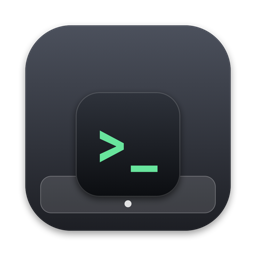
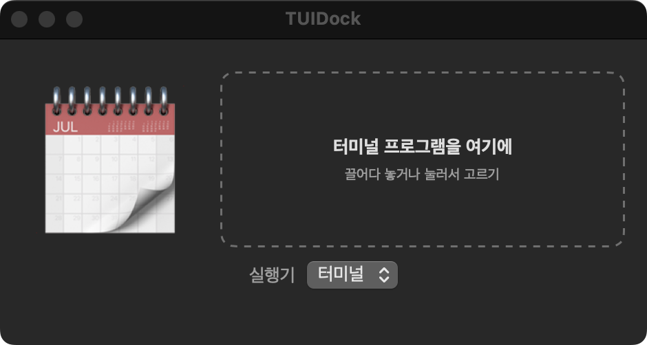
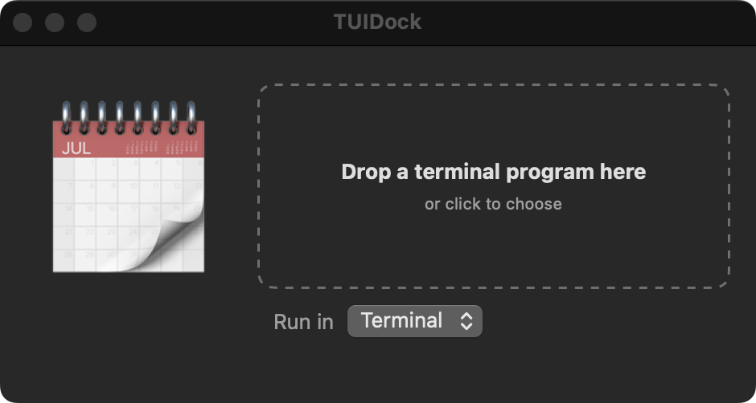
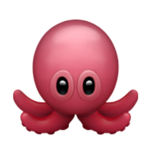

다운로드Download | GitHub | English

TUIDock터미널 프로그램을 Dock 앱으로Turn terminal programs into Dock apps
TUI 프로그램(htop, lazygit, 직접 만든 도구 …)을 끌어다 놓고 이모지를 고르면 .app이 나온다. Dock 아이콘·Cmd+Tab 항목이 따로 생기고, 창은 고른 실행기(터미널·아이텀·고스티)에 뜬다.
Drop a TUI program (htop, lazygit, your own tool …), pick an emoji, and you get a .app. It gets its own Dock icon and Cmd+Tab entry, while the window stays in the terminal you pick (Terminal, iTerm2, Ghostty).



TUIDock.dmg — 열어서 TUIDock을 Applications로 끌어다 놓는다.Open it and drag TUIDock to Applications.
또는 터미널에서(tuidock 명령까지 설치, 같은 명령으로 업데이트):Or from the terminal (also installs the tuidock command; run again to update):
curl -fsSL https://zidell.github.io/tuidock/install.sh | bash
macOS 14 이상 · Apple Silicon·Intel · 터미널·아이텀·고스티macOS 14+ · Apple Silicon & Intel · Terminal, iTerm2, Ghostty
매일 쓰는 터미널 도구가 Terminal 탭 사이에 섞여 있으면 찾기 어렵고, Cmd+Tab으로 바로 갈 수도 없다. 무엇보다 Terminal 탭은 앱이 아니라서 BetterTouchTool(BTT) 같은 도구로 단축키를 붙일 수 없었다. 단독 앱이 되면 “이 단축키로 캘린더 열기·앞으로 가져오기”를 다른 앱처럼 지정할 수 있다. 이게 가장 큰 이유다. Terminal tools you use every day get lost among Terminal tabs, and Cmd+Tab can't take you straight to them. Above all, a Terminal tab isn't an app, so tools like BetterTouchTool (BTT) can't bind a shortcut to it. As a standalone app it can have its own “open / bring to front” shortcut like any other app — that was the main reason.
터미널 캘린더(calendar-tui)를 만들면서 이걸 Dock에서 여는 실행기를 붙였는데, 도구마다 만들 게 아니라 아무 프로그램이나 감싸는 생성기로 떼어 낸 것이 TUIDock이다. While building a terminal calendar (calendar-tui) I wrote a launcher to open it from the Dock — TUIDock is that launcher turned into a generator for any program.
터미널 에뮬레이터를 품은 앱은 도구 하나에 100MB가 넘는다. TUIDock은 창을 Terminal에 맡기고 Dock 아이콘과 단축키만 얹어서, 도구당 약 23MB(Terminal 창 9MB + 실행기 14MB)다. An app that embeds a terminal emulator costs over 100MB per tool. TUIDock leaves the window to Terminal and only adds the Dock icon and shortcuts — about 23MB per tool (9MB Terminal window + 14MB launcher).
만든 앱은 작은 실행기다. 열면 고른 터미널에 새 창을 띄워 프로그램을 실행하고, 프로그램이 끝날 때까지 같이 떠 있으면서 그 창을 단독 앱처럼 다룬다. 프로그램이 끝나면 앱도 끝난다. A made app is a small launcher. It opens a new window in the terminal you picked, running your program, stays alive alongside it, and treats that window like a standalone app. When the program exits, so does the app.
Cmd+W는 창을 가리고, Cmd+Q는 그 앱만 끝낸다(Terminal은 그대로). Cmd+T(새 탭) 같은 Terminal 단축키는 그 창에서 막힌다. 복사·붙여넣기는 된다.Cmd+W hides the window, Cmd+Q quits just that app (Terminal stays). Terminal shortcuts like Cmd+T (new tab) are blocked in that window; copy and paste still work.Cmd+F …)을 Terminal 대신 프로그램이 받는다. Go 패키지가 있다.If your program speaks the protocol, it receives Cmd shortcuts (Cmd+F …) instead of Terminal. There's a Go package.Cmd+W가 최소화다. 고스티는 창 하나만 가릴 방법이 없어 앱마다 고스티를 따로 띄운다(앱당 메모리 70~100MB 더).Pick Terminal, iTerm2 or Ghostty. iTerm2 can't hide a single window, so Cmd+W minimizes it. Ghostty can't either, so each app runs its own Ghostty (about 70-100MB more memory per app).tuidock <실행 파일program> [이모지emoji] [옵션options]
실행 파일program | 경로나 PATH의 명령 이름(htop). 셸 alias는 안 된다A path or a command name on PATH (htop). Shell aliases don't work |
이모지emoji | 아이콘. 없으면 아무거나 고르고, 같은 이름 앱이 있으면 그 아이콘을 그대로 쓴다The icon. Without one, a random emoji — or the existing app's icon if one with that name exists |
--name | 앱 이름(기본: 파일 이름 첫 글자만 대문자로, htop → Htop)App name (default: the file name capitalized, htop → Htop) |
--icon | 이모지 대신 이미지 아이콘(PNG·JPG·ICNS)An image icon instead of an emoji (PNG, JPG, ICNS) |
--arg | 실행 인자(여러 번)Program argument (repeatable) |
--terminal | 실행기: builtin(자체 터미널, 기본)·terminal·iterm2·ghostty. 주지 않으면 같은 이름 앱의 것을 그대로Terminal to run in: builtin (built-in, default), terminal, iterm2, ghostty. Without it, an existing app's choice is kept |
--no-dock | Dock에 고정하지 않는다Don't pin to the Dock |
--help | 도움말(make·install 등 전체 옵션)Help (all options, including make and install) |
예:Examples:
tuidock htop 😁 # PATH의 명령 이름# a command on PATH tuidock ~/Sites/foo/bin/foo 🦊 # 경로# a path tuidock foo # 이모지를 빼면 아무거나# no emoji: a random one
앱을 /Applications에 넣고 Dock에 고정한다. 실행 파일은 복사하지 않고 그 경로를 실행하므로, 프로그램을 다시 빌드해도 앱은 그대로다. 같은 이름으로 다시 만들면 덮어써서 빌드 스크립트에 넣어 두기 좋다.
It installs the app in /Applications and pins it to the Dock. The executable isn't copied — the app runs it from its path — so rebuilding your program needs no new app. Making it again with the same name overwrites it, so it fits in a build script.